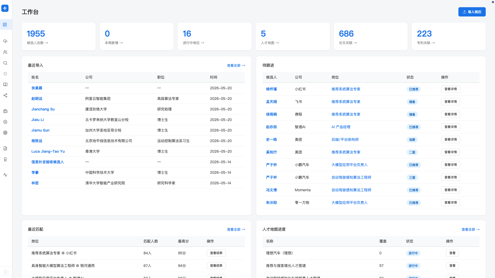

10 分钟上手
Hunter 已经装好，主界面打开了——接下来 10 分钟你会跑通一个完整的闭环： 导入几份简历 → 创建一个岗位 → 让 AI 跑匹配 → 看推荐结果。 这一遍跑下来，你就理解了 Hunter 日常怎么用。
这一篇假设你已经打开 Hunter，看到了主界面。 如果还没启动，先看「安装与启动」。
准备：5 份测试用简历
跑这一遍最好准备5-10 份候选人简历（PDF 或 .docx）， 随便挑哪个岗位方向都行，但同一类岗位的人比较容易看出匹配差异。 现成的话直接用；没有的话先随便挑几份能找到的简历凑数，先把流程跑通比什么都重要。
起点：工作台
打开 Hunter 后默认是「工作台」页面（左侧导航第一项）。 这是你日常的入口。从上到下：
- 右上角「导入简历」：蓝色主按钮，最常用的入口
- 6 个统计卡：候选人总数 / 本周新增 / 进行中岗位 / 人才地图 / 论文关联 / 专利关联—— 全部可以点击跳转。刚装好时这些数字都是 0，跑一段时间后会像下面这样累积起来
- 「最近导入」：最近一批简历的快捷预览
- 「待跟进」：当前各岗位上需要你跟进的候选人
- 「最近匹配」/「人才地图进度」：下方两个区块汇总最近的匹配跑批和 mapping 推进

第 1 步：导入几份简历（2-3 分钟）
-
点工作台右上角「导入简历」
跳到「简历上传」页面（也可以左侧导航 →「简历上传」进入）。
-
把简历文件拖到拖入区，或点「选择文件」
支持 PDF / DOCX / XLSX，一次可以丢多个文件。 5 份简历就拖 5 份。
-
等 AI 解析
每份简历需要约 5-30 秒。下方「处理记录」会实时更新状态： 进行中 / 已完成 / 失败。 泡杯咖啡的功夫就跑完了。
-
回工作台看候选人入库
左侧导航点「候选人管理」——看到刚解析好的候选人卡片，每个都自动整理好了工作经历、技能、行业标签。 点姓名进详情页可以看完整档案。
Word 97-2003 的 .doc 文件不能直接上传。 打开后用「另存为」选 .docx 格式再上传即可。
想了解候选人库更多功能（5 种导入方式 / 搜索 / 筛选 / 收藏夹 等），看「候选人库」。
第 2 步：创建一个岗位（2-3 分钟）
有了候选人之后，建一个岗位才能跑匹配。
- 左侧导航进入「岗位管理」
-
点右上角「+ 新建岗位」按钮
弹出新建岗位弹窗。
-
填岗位信息
核心字段：
- 职位名称（必填）：如「AI 算法负责人」
- 公司：如「某 AI 公司」（客户方公司名，可写化名）
- 工作地点：如「北京」
- 薪资范围：80-120 万
- 最低年限：如 8
- 学历要求：本科 / 硕士 / 博士
- 关键技能（逗号分隔）：如「大模型，NLP，团队管理，Python」
- 岗位描述（JD）： 直接粘贴客户的完整 JD。AI 会从 JD 提取更细的要求做匹配评估
-
点「保存岗位」
岗位创建成功后会跳到岗位详情页，能看到刚填的所有信息。
岗位描述里写得越具体（要求年限、学历、薪资范围、关键技能、职责）， AI 匹配时给出的强弱项分析就越有依据。 第一次跑可以把客户邮件里的 JD 原文整段贴进去，方便又准确。
第 3 步：跑第一次匹配（3-5 分钟）
有了候选人 + 岗位，可以让 AI 跑匹配了。
-
在岗位详情页找到「匹配情况」卡片
初始状态显示「暂无匹配记录」+ 蓝色「开始匹配」按钮。
-
点「开始匹配」
AI 会读你刚填的 JD，去候选人库里逐个评估，按匹配分排序。 5 份候选人几十秒就跑完；如果你之前导入了几百份，也就几分钟。
-
看 Top 预览
匹配完成后，「匹配情况」卡片里显示找到的候选人数和 Top 3 预览。 每个候选人有匹配分（0-100）+ 推荐结论（强烈推荐 / 推荐 / 观望 / 不推荐）+ 风险标记（如年限风险）。
-
点「查看全部」看完整列表
跳到「匹配结果」页面，看所有候选人的完整匹配卡片。 点任意候选人卡片可以看 AI 的详细评估：优势点、风险点、综合评估。

分数高的候选人是相对于这个岗位匹配度高，最终是不是要推还要你看具体的强弱项。 AI 给的是辅助判断，最后拍板的还是你。
恭喜，你跑通了 Hunter 的核心闭环
这一遍跑下来，你已经体会到了 Hunter 的核心价值——
- 导入：AI 自动整理简历，省去手工录入
- 匹配：AI 几秒钟从一堆人里挑出最匹配的几个
- 判断辅助：每个候选人都有评分和强弱项，帮你快速做决策
这只是入门。Hunter 还能做很多事，按你日常需要看对应的能力指南：
5 种方式入库 · 搜索 · 收藏夹
把更多简历导入库，学会搜索和组织候选人。
同人识别 · 合并 · 撤销
导入量大起来后，处理库里的疑似重复。
读懂评分 · 增量匹配 · 风险标记
详细解读 AI 评分，学会用增量匹配节省时间。
候选人 × 岗位推进流程
从挑出候选人到入职的完整跟进流程。
夜跑寻访 · 待审池审核
配好寻访任务，让 Hunter 在招聘平台帮你筛人。
对标公司组织结构
用思维导图建团队地图，自动关联库内候选人。
看完上面这些再回来跑一次，你会发现 Hunter 的能力远不止匹配—— 它是一个能陪你日常跑全部招聘工作流的工作伙伴。
跑这一遍可能踩的坑
先检查「处理记录」里有没有「失败」状态—— 如果有，点开看失败原因（常见：PDF 加密、.doc 老格式、文件损坏）。 成功状态的简历会马上出现在「候选人管理」里，刷新页面即可。
如果候选人库是空的（一份简历都没导入），匹配会跑空。 先确认「候选人管理」里至少有几个人再跑匹配。
常见原因：① 候选人和岗位不在同一专业领域（如导入了销售类简历去匹配 AI 算法岗位）； ② 岗位 JD 写得太宽泛，AI 抓不到具体要求。 正常使用时简历库的规模会大很多，跑出 Top 都是有意义的，初次试用感受不到这个差异是正常的。